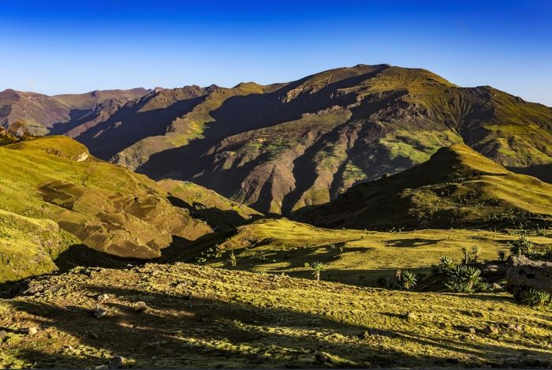
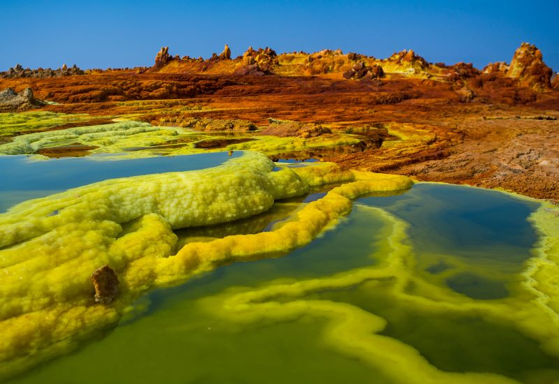
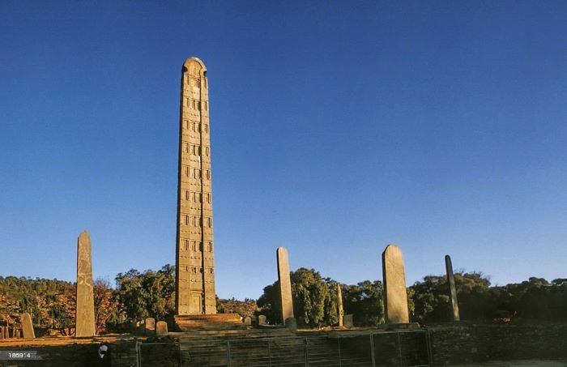
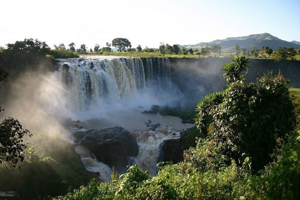

Dalol to Dashen

Dashen
Dallol
Top 5 Mountains in Ethiopia: Vast Beauty, Ancient History and Untamed Adventure. Explore the Highest Peaks of the Unique Landscape.
| Name | Location | Height in meter |
|---|---|---|
| Ras Dashen | Amhara, North Ethiopia | 4,620 m |
| Tullu Dimtu | Bale | 4,377 m |
| Ābune Yosēf | Amhara | 4,260 m |
| Guge | SNNPR | 4,200 |
| Hay | Amhara | 4,173 |
Recomended places to be visited


